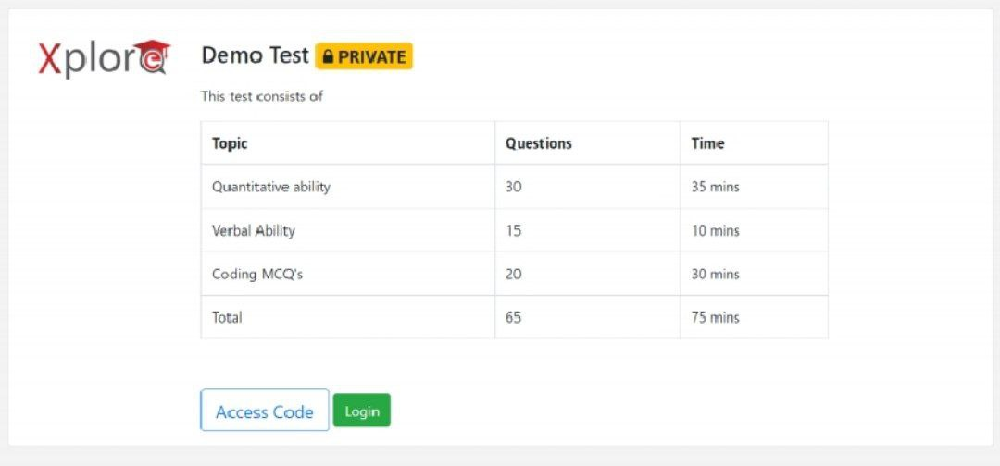

Software Test Engineer - B.Tech/MCA Freshers Virtual-Walk-in Hyderabad
Desired Candidate Profile
Qualification:
B.E/B.Tech/M.Tech CSE | IT | ECE | EEE or MCA, passed in 2022, 2021, 2020, 2019 only
Minimum 65% in academics
The candidate should have
excellent programming/coding skills (in Java, C#.NET, or C)
and good communication skills.
The candidate must be
interested in working on Software testing/Test Automation.
Must be able to join immediately.
Roles and Responsibilities
Get trained in Software Testing/Test Automation during the first six months.
Perform end-to-end testing of each application flow through comprehensive API and UI testing
Create robust and reliable Automated Test Scripts using Selenium, Cypress, and Katalon Studio like tools
Work with Dev, BA, and QA Lead to analyze test results and defects and develop software enhancement and resolution plans.
Create robust and reliable Automated Test Scripts using Selenium, Cypress, and Katalon Studio like tools
Attend Sprint planning, scrum, and retrospective meetings
Online Test Details ( This is an open walk-in Test conducted online)
Exam Date:
Thursday, Sept 22, 2022;
Time: candidates can take the test anytime between 10:00 am and 01:00 pm the same day
Test Pattern:
Aptitude, Reasoning, Programming Objective, and Coding, followed by an online Video Interview
Test Pattern 1:

Apply link :
Apply Fast
Software Test Engineer - B.Tech/MCA Freshers Virtual-Walk-in Hyderabad
Please fill below form
Your Name :
your Email :
Please Enter Your Problem :